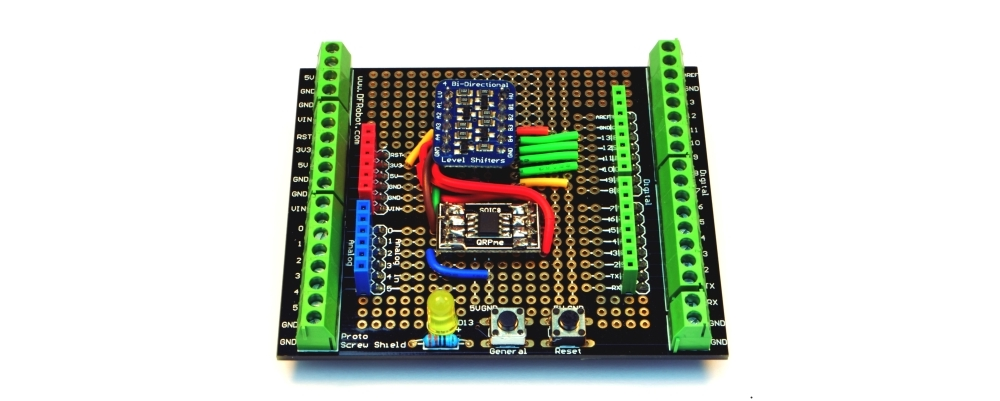
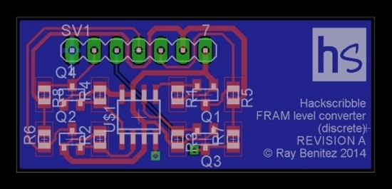
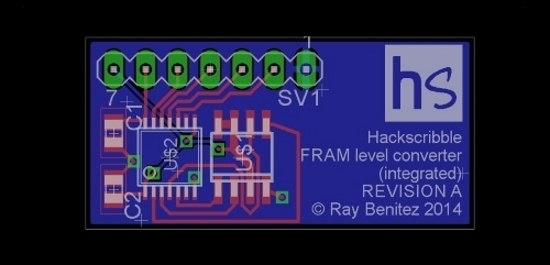
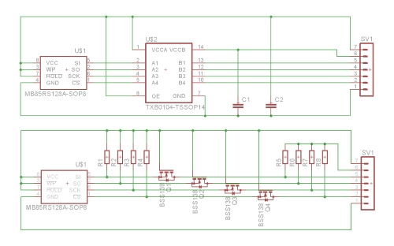
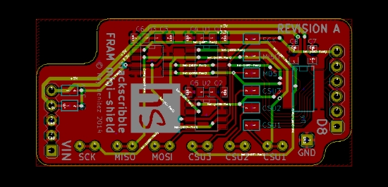

Getting started.
When we wrote the Hackscribble Ferro library to add FRAM to our Arduino projects, we needed hardware to test it with. Our first version used a breadboard, an SOIC-8 breakout from QPRme for the MB85RS FRAM chip and an Adafruit bidirectional level converter.
The hardware worked first time, but the software took a few attempts. However, with everything proved on the bench, we decided to move on to a more permanent test rig. We swapped the breadboard for an Arduino prototyping shield from DFRobot, plugged the level converter into header sockets (so we could borrow it for other projects) and hardwired the FRAM breakout.
Smaller is better.
We have been experimenting with FRAM because we want to add storage to a test equipment project that's in development. The FRAM will be built into the PCB for that project rather than being added as an Arduino shield. So we started some design work on fragments of circuit boards to see how small we could make the combination of FRAM and level converter.
The first design is based on the Adafruit level converter, which in turn is taken from an NXP application note. The circuit uses BSS138 MOS-FETs and some resistors. One FRAM chip and the level converter components use about 25mm by 10mm of PCB space. With pin headers added to turn it into a breakout board, it is still only 25mm by 18mm, plus space for labelling.
We thought we could do better than this, however. The level converter is bidirectional and I2C compatible. We don't need I2C for this application, and can make do with a simpler circuit based on the TXB0104 chip.
This circuit takes up only 20mm by 10mm. Pin headers take it up to 20mm by 20mm, plus space for labelling.
We have not yet built and tested either fragment in hardware, but both circuits check out OK on paper. Our new mini-shield (see below) uses the big brother of the TXB0104.
Making it easier with a shield.
When we decided to build a FRAM mini-shield, we had three goals:
- Make it easy to add FRAM to future projects.
- Be compatible with both 5V Arduino boards and 3.3V LPCXpresso boards.
- Include SPI test points to make it easy to hook up a data analyser for software debugging.
Our first design has space for up to three 3.3V FRAM ICs and a TXB0108 level converter for compatibility with the Arduino's 5V logic levels. The three FRAMs use digital pins 8, 9 and 10 as chip select. After wrestling with a faulty FRAM for a while, the hardware worked first time on both the LPCXpresso and Arduino boards.

We have already spotted some improvements that we will publish in a Revision B board soon. Then we will produce a version without the SPI test pins, since many people will not want these and the PCB can be made smaller without them.
Download the schematics and board layouts.
 - Want the software?
- Get the Hackscribble Ferro library.